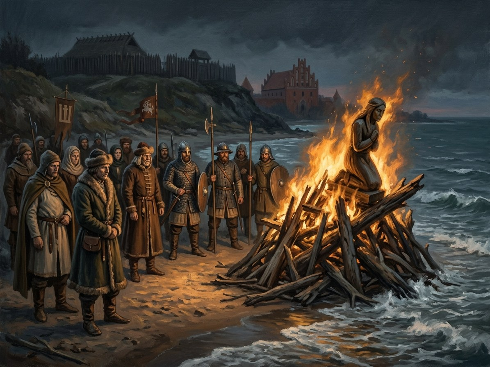

Žiežirba dies; cremated on the beach¶
What the chronicles say [Historical record]¶
Nothing in the record.
Žiežirba dies; cremated on the beach

Žiežirba dies; cremated on the beach · event¶
Type |
event |
Years |
1450-03 |
Status |
The saga’s invention |
Book |
|
Chapters |
29 |
Note |
Early March 1450. The sea takes the kneeling statue (Book V ch. 29). |
Where: Palanga (on the map)
What really happened [The saga’s invention]¶
Žiežirba dies in early March 1450 and is cremated on the beach; the silver wolf passes to Rimgailė; the kneeling statue glows once with remembering, and the sea takes her (Book V ch. 29). The frame closes: “Vanduo siekia smakrą.”
Consequences¶
Ends the kneeling statue’s watch on the shore.
Dramatisation¶
Book V ch. 29 (frame); the 1553 epilogue is ch. 30.
Relations
Caused by: The keeper is named at the Palanga fire
Ends: Klūpančioji (amber statue, Palanga) — The sea takes the statue.
Location: Palanga
Participants: Dargis (Palanga fisherman) · Gedvilė (Rimgailė’s granddaughter) · Rimgailė (Palanga fisherwoman) · Žiežirba (the Flame-Keeper, Book V POV)
Connections¶
graph LR
dargis["Dargis (Palanga fisherman)"]
ev_keeper_dies["Žiežirba dies; cremated on the beach"]
ev_ziezirba_named["The keeper is named at the Palanga fire"]
flame_keeper["Žiežirba (the Flame-Keeper, Book V POV)"]
gedvile["Gedvilė (Rimgailė's granddaughter)"]
kneeling_woman["Klūpančioji (amber statue, Palanga)"]
palanga["Palanga"]
rimgaile_palanga["Rimgailė (Palanga fisherwoman)"]
ev_keeper_dies -->|Location| palanga
ev_keeper_dies -->|Ends| kneeling_woman
ev_ziezirba_named -->|Causes| ev_keeper_dies
flame_keeper -->|Took part in| ev_keeper_dies
rimgaile_palanga -->|Took part in| ev_keeper_dies
dargis -->|Took part in| ev_keeper_dies
gedvile -->|Took part in| ev_keeper_dies
style ev_keeper_dies stroke-width:3px